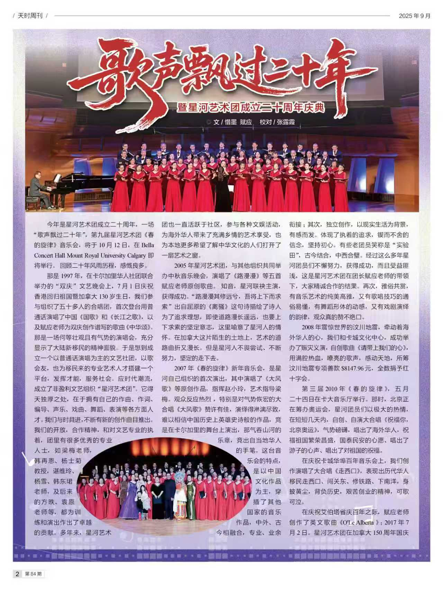
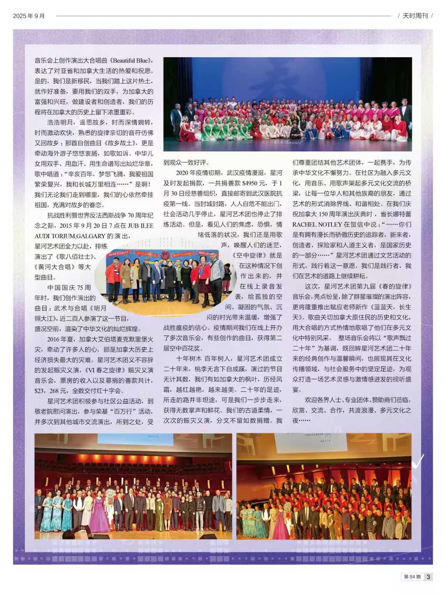

观众反馈 Feedback
《歌声飘过二十年》记加拿大星河合唱艺术团春的旋律音乐会——观后感
文/曲直
歌声飘过二十年，如果敢仔细地揣摩一下，您会由衷地道一声：星河的艺术家们辛苦了！这份耕耘曾经了多少心血和汗水，记录了多少无眠之夜，多少动人美好瞬间。大屏幕滚动着一帧帧演出画面，二十年犹如“昨天”。永无停歇的艺术追求，中华文化的自然浸润，悄然又恰似润物细无声浇灌在海外游子的心田。当您走进皇家山校园剧场，坐在喜洋洋的人群当中，扑面而来的是百感交集的氛围，听着新老朋友的热烈寒暄，放松到极致的惬意私语，您会情不自禁地徜徉于幸福的海洋，享受那一份中秋的快乐，那一份他乡而故乡的满足感以及只有炎黄子孙才能体会得到的情怀。秋凉的季节，开出“春的旋律”，这便是星河人给予的最珍贵最美的乡情。
大合唱《世界赠予我的》《我家在中国》这两首合唱曲作为开场白拉开了2025春的旋律音乐大幕，一幅辉煌夺目而出。我一直在想节目编导组怎么就一下子就触摸到海外游子身体里藏着那一处最柔软的乡情，“我家在哪里，家在中国，从前我总在心里默默说，我家在哪里家在中国，今天我总是这样自豪地说，，，”看到歌词内心柔软的人就会破防，那么用歌声唱出来呢，而且这旋律是要了命的好听。如果说《世界赠予我的》是一种感恩，那么《我家在中国》那便是海外华人的根。这一局我打满分！
二胡独奏《幽谷》演奏者王雨蒙，不知道为什么由漂亮女士演奏沧海桑田般厚重的二胡曲目简直就是一种魔幻，这般梅花傲雪的效果带来的只有震撼！说实在的笔者听过不少二胡演奏的优秀曲目，像“二泉映月”里的悲怆与倾诉、“江河水”的蓄势与奋进等，然《幽谷》的音乐形象兼而有之。演奏者王雨蒙以其精湛演技征服了全场观众，赢得了热烈掌声。《幽谷》沉山厚重，不乏经典。委婉中悲悯，素颜中升华。随情幽谷，玉挽潇碧，彩漫流听。
小天鹅舞蹈学校的艺术伴舞，进一步丰富了舞台效果，让整个画面臻于完美。点赞！童声合唱《花开忘忧》是星河艺术合唱团的未来之星，体现了星河人不仅在传播中华文化上下功夫，同时注重未来之传承。小朋友们的成长历程根本是花蕾开放的过程，花开忘忧意味着幸福成长。别看是“童声”确是成年的气势，不禁让人感叹，舞台真正是培养人自信的地方。
《今夜无人入睡》是一首由意大利音乐家普契尼在他的最后一部歌剧《图兰朵》里的咏叹调。这段唱于听过歌剧的人而言可谓人尽皆知家喻户晓。《图兰朵》诞生以来，人们已把这段演绎固化成了一种标准，你说它是试金石也好，还是进士及第的考卷也好，敢招呼，您就拿出真东西来！唱将——黄倜以帕瓦罗蒂高音震撼，一气呵成！有时我总在想世界级名人和我们身边的人到底有多大差距？名声与包装的比重会不会模糊了我们的视线。音乐的圣洁来自于真诚下摇篮里的天赋，我们虽然不会发出“王侯将相宁有种乎？”的疑问，但我们至少当有伯乐相马的哲学思考。舞台艺术本身就是自我艺术救赎的挑战，歌者完成的是一种“救赎”过程，一种把热爱换算成艺术感染力的努力和追求。既自然又超然，甘之如饴沁人心脾。
男声四声部小组唱《莫尼山》是星河的拿手组合，演唱形式的多样化，必然产生趣味的丰富性。综合起来讴歌的其实是生活！像朱建业、李全等他们是星河建团时老团员，一路走来，每每演唱流露出来的情感，作为观众又是知情人的我是能体会得到的。
男声独唱《精忠报国》由舒宁演唱，音乐里的气势恢宏，歌声里的大气磅礴营造了时空对话。这是一首鼓舞精神的战歌，更是中华民族的铁血男儿的士气，是中华文化的重要组成部分。听了这支歌，您就了解了中国的四字成语“热血沸腾”。
女声独唱《节日欢歌》演唱者梁梅，星河艺术团艺术指导，原苏州大学音乐教师，美声女高音。梁梅的演唱嗓音纯净丝滑，甘甜旷美，说得通俗一点，高音起来那就是海外的殷秀梅，柔软下来就是他乡的吴碧霞。《节日欢歌》在梁梅的倾情演绎下舞台放射的华彩用诗句形容更恰当些，“巴山夜雨涨秋池，不尽长江滚滚来。”梁梅的演唱为上半场画下了完美句号。艺术舞台艺术追求艺术的底蕴来自于孜孜以求。只有锐意进取的人方能登顶礼赞的峰峦。
十五分钟的中场休息，换来的是另一番热情洋溢，似乎不仅是大家的自我放松的小息，更是交流互动的契机。说“美好是一种不经意间的平常”，大概说得就是这种时候。
下半场的开篇是星河团的《如愿》，女声小组唱的表现形式，一种怀旧感扑面而来，艺术陶醉是瞬间的博弈，是为艺术在于恰到好处。在这里您欣赏到的是星河的骨干力量欧阳晨艳、郭青青、许多艺、张瑞红、王健、裴煜、杨玮、胡建农、刘积荣、单树红。欣然眼前的美好，忘却生活的琐碎，正是艺术的魅力。人们把唱歌排在影响健康指数的第一位可想而知其重要了吧。若是听者已然听得如痴如醉，况唱者本尊乎。
京剧选段《贵妃醉酒》由星河团员王艳屏女士担纲，王艳屏更是梅派艺术传人梅葆玖先生海外弟子严立苹的入室弟子。梨园师乘是中华戏曲文化艺术的保障，以至于大量的非物质文化遗产得以保护下来。一招一式一板一眼举手投足万种风情，一时间舞台斗转星移宫音飘渺，扶摇梦幻。旋赞！
《霓裳羽衣舞》是由赵丽舞蹈学校选送的节目，海外各文艺团之间的互动从这里可见一斑。一台别开生面的艺术节目离不开多种艺术形式的加持。一幅如敦煌壁画的静态美呈现在观众面前，音乐的触点像激动的跨年钟声，鲜活的唐韵少女穿越历史的时空隧道和当代的你我把手言欢。难怪近年来老外痴迷于中华文化，原因是中华文化宝库里藏着太多太多神奇，令人心驰神往流连忘返。
古韵新曲《青玉案·元夕》再把时空切换到南宋年代的元宵节，词作者辛弃疾作为南宋现实主义的爱国词人，写下了最为婉约的一首词，侠骨柔情，说辛弃疾为第二空无人敢争第一。星河改编的男女声组合，可谓簇美亲和，桂姚兰听。艺术再现的同时，向海外多元文化受众从容展示了中华文化的历史厚重。
男女声二重唱《携手同行》、《让大家痛饮》、女声独唱《故乡是北京》，歌声飘过二十年大联唱，把音乐晚会推向了高潮。二十年的积淀，二十年的璀璨，二十年的耕耘，二十年的收获。
大合唱《雪花的快乐》犹如时光的注脚，特别是合唱曲《兰兰天 长生天》是由星河团长海内外著名作曲家赋应老师为此次音乐会倾情谱曲打造的力作，由星河音乐会总导演赵晓铃女士担纲指挥。作品讴歌了加拿大原住民印第安人的血脉传承。“空谷里的回声响越千年，山风飒飒，诉说着前世今生，，”同时作品又体现了中国移民尊重当地文化，携带的是感恩之心。作品透着内敛、融合、共和等品质与大智慧。
当结束曲《二十年后再相会》响起的时候，全场起立，掌声经久不衰。在这经久不衰的掌声里笔者似乎看到了中华文化之花放妍的灿烂，理解了星河人倾二十年的努力只做一件事，那就是星河人搭建的艺术桥梁实则是在构建海外华人文化生态而从事的伟大实践！笔者突然明白了这就是为什么有来自于中华人民共和国卡尔加里总领事馆的贺信、有来自于渥太华加拿大政府的贺词，更有数十家卡城华人社团的支持与协助。
祝贺星河演出圆满成功！

